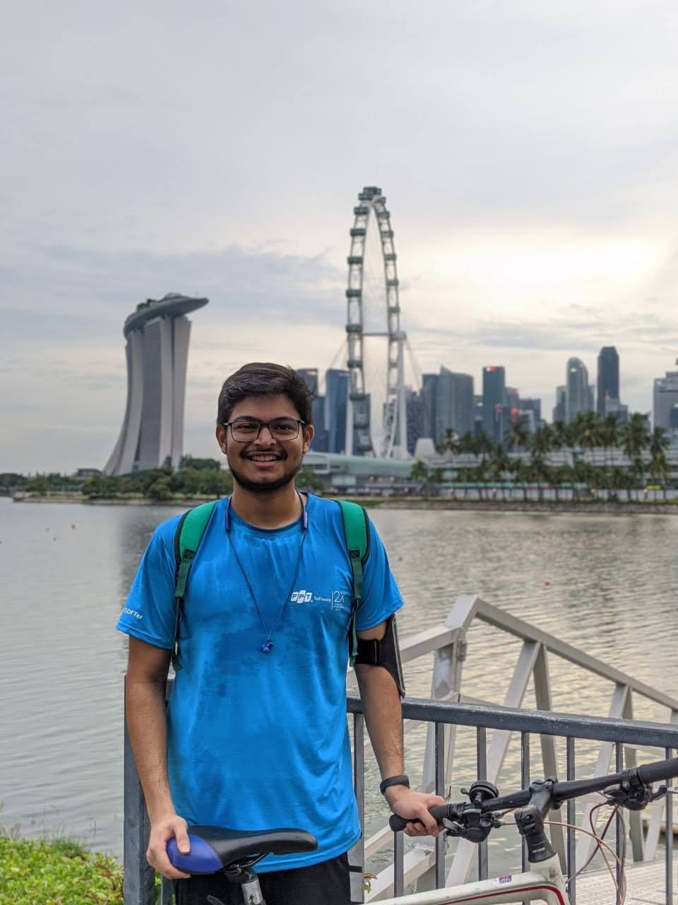

|
Akhilesh Gotmare
I am a Machine Learning Researcher with Salesforce Research in Singapore where I work on deep learning and its
natural language processing applications.
Previously, I completed my MSc at the Department of Computer Science at EPFL, Switzerland,
where I was working with Prof. Martin Jaggi's
Machine Learning and Optimization laboratory for my thesis project on model parallel training of deep neural nets.
Prior to EPFL,
I completed my undergraduate studies in Electrical Engineering (with a CSE minor) from IIT Gandhinagar,
where among other things I had the fun experience of organizing the maiden TEDx event on campus!
Email /
Google Scholar /
LinkedIn /
CV /
GitHub
|

|
Cascaded Fast and Slow Models for Efficient Semantic Code Search
Akhilesh Gotmare, Junnan Li, Shafiq Joty, Steven Hoi
preprint
[ arXiv ]
|
Align before fuse: Vision and language representation learning with momentum distillation
Junnan Li, Ramprasaath Selvaraju, Akhilesh Gotmare, Shafiq Joty, Caiming Xiong, Steven Hoi
NeurIPS 2021 (Spotlight)
[ arXiv,
Blog,
Code ]
|
GeDi: Generative Discriminator Guided Sequence Generation
Ben Krause*, Akhilesh Gotmare*, Bryan McCann, Nitish Shirish Keskar, Shafiq Joty, Richard Socher, Nazneen Fatema Rajani
EMNLP 2021 (Findings)
[ arXiv,
Blog,
VB coverage,
Import AI,
Code,
Demo ]
|
A Closer Look at Deep Learning Heuristics: Learning rate restarts, Warmup and Distillation
Akhilesh Gotmare, Nitish Shirish Keskar, Caiming Xiong and Richard Socher
ICLR 2019 (partial results presented at CRACT Workshop, NeurIPS 2018)
[ arXiv,
OpenReview,
Poster ]
|
Using Mode Connectivity for Loss Landscape Analysis
Akhilesh Gotmare, Nitish Shirish Keskar, Caiming Xiong and Richard Socher
Workshop on Modern Trends in Nonconvex Optimization for Machine Learning, ICML 2018.
[ arXiv,
Poster ]
|
Decoupling Backpropagation using Constrained Optimization Methods
Akhilesh Gotmare*, Valentin Thomas*, Johanni Brea and Martin Jaggi
Workshop on Efficient Credit Assignment in Deep Learning and Deep Reinforement Learning, ICML 2018.
[ OpenReview,
Poster ]
|
Unsupervised robust nonparametric learning of hidden community properties
Mikhail Langovoy, Akhilesh Gotmare, Martin Jaggi, Suvrit Sra
Mathematical Foundations of Computing 2 (2), 127-147
[ arXiv,
AIMS MFC journal ]
|
Swarm and evolutionary computing algorithms for system identification and filter
design: A comprehensive review
Akhilesh Gotmare, Sankha Subhra Bhattacharjee, Rohan Patidar, Nithin V. George
Swarm and Evolutionary Computation, 32, 68-84.
[ Elsevier SWEC journal ]
|
Nonlinear system identification using a cuckoo search optimized adaptive Hammerstein model
Akhilesh Gotmare, Rohan Patidar, Nithin V. George
Expert systems with applications, 42(5), 2538-2546.
[ Elsevier ESWA journal ]
|
|